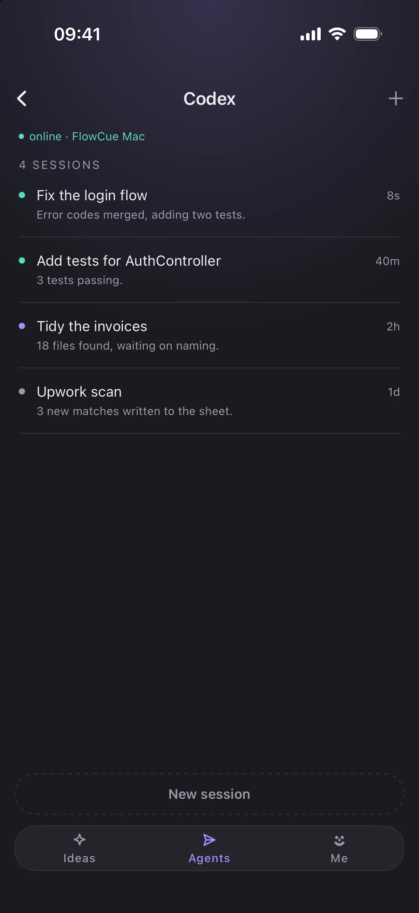
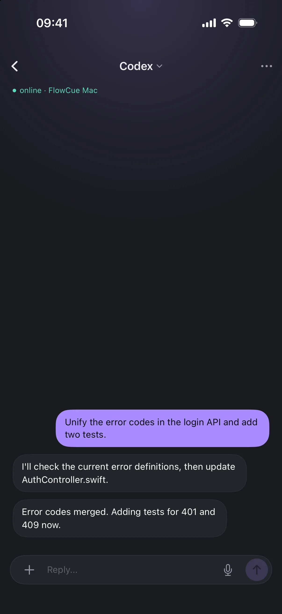
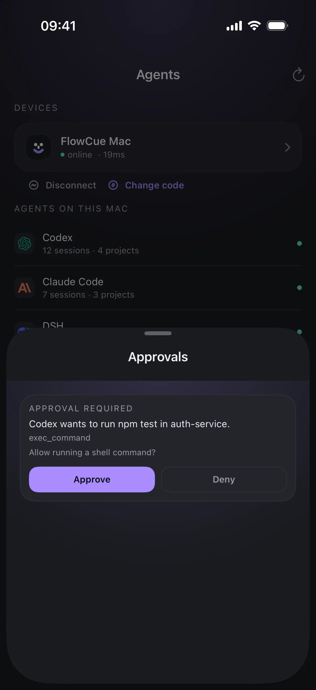

01
See every agent
Codex, Claude Code and DSH from your Mac, grouped by project and searchable from the phone.

The same inbox and the same agents, on iPhone. Watch Codex, Claude Code and DSH sessions from your Mac, answer a question, or approve a command without walking back to the desk.
iOS 17+ · iPhone · pairs with your Mac over the local network
One scroll through the iPhone app. Demo data, captured from the build.



Codex, Claude Code and DSH from your Mac, grouped by project and searchable from the phone.
Last reply, project and time since it moved are already on the row.
The full conversation, not a summary. Markdown, images and the next message all in place.
A pending command arrives as a card. Allow or deny; the Mac keeps working.
Codex, Claude Code and DSH sessions from your Mac, grouped by project and searchable from the phone.
A pending approval shows up in the app and as a notification. Allow or deny without opening the Mac.
Read the conversation, send the next message, and share images or links into the session.
1.1.6 (96) is the current beta. It is invite-only; the App Store release comes after the beta.
The beta needs your Mac awake and on the same Wi-Fi. Remote pairing over the internet is not part of this beta.
Not yet. The iPhone app is in TestFlight by invitation; the App Store release comes after the beta.
No. The iPhone reads the agent sessions that already run on your Mac, over your local network.
It is free during the beta. Pricing and Pro are announced before the App Store release.